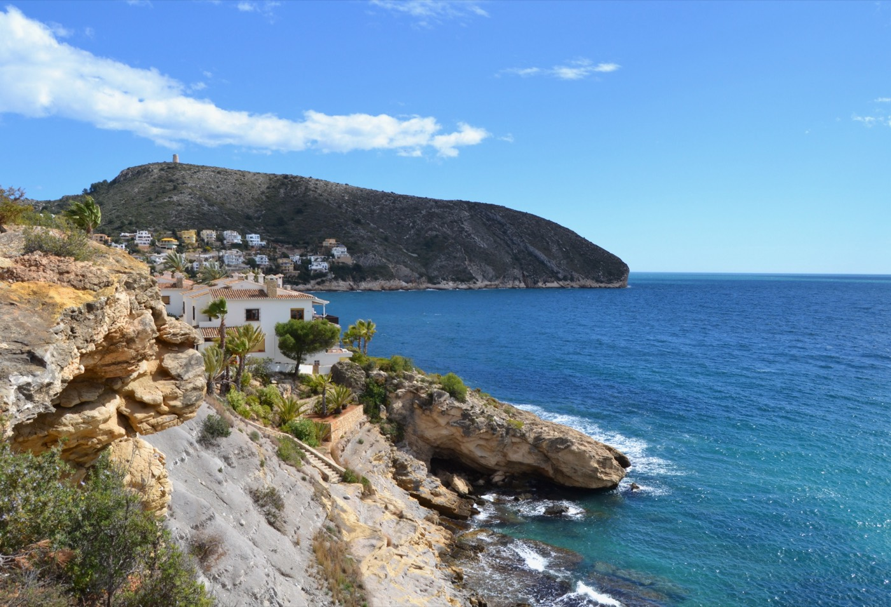

Blog · Wat te doen in Moraira
Wandelen naar de wachttoren van Cap d’Or
8 september 2026 · Leestijd 2 minuten

Boven op de kaap die de baai van El Portet afschermt staat een zestiende-eeuwse wachttoren, gebouwd om piratenschepen vroegtijdig te zien aankomen. De wandeling ernaartoe is kort maar stevig — en het uitzicht boven is een van de beste van de hele omgeving.
De route
Het pad begint aan het einde van El Portet en klimt door lage dennen en rotsige stukken naar de punt van de kaap. Reken op zo’n drie kwartier tot een uur heen en terug, met wat klauterwerk in het laatste stuk. Boven kijk je de ene kant op naar Moraira en de andere kant naar de kliffen richting Calpe, met de Peñón de Ifach aan de horizon.
Goed om te weten
Er is onderweg geen schaduw en geen water te koop — neem zelf een fles mee en vermijd in de zomer het middaguur. Stevige schoenen zijn geen overbodige luxe: het pad is rotsig. De toren zelf kun je niet in, maar daar kom je ook niet voor.